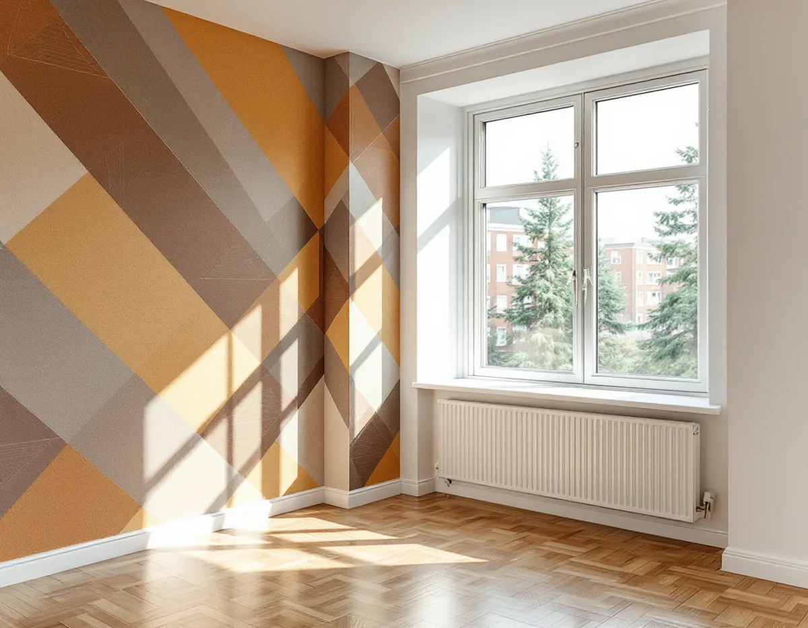
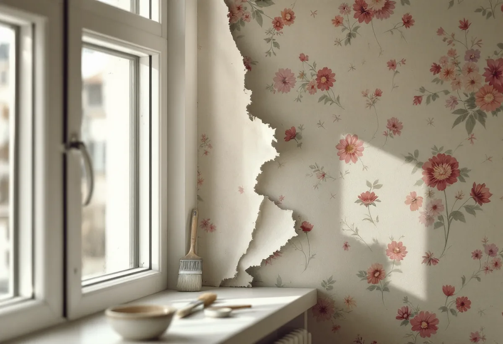

Platsbesök
Vi ser vad som sitter på väggarna och frågar efter husets byggår och tidigare renoveringar.
De flesta bostäderna i stadsdelen Farsta ligger i flerbostadshus, och tunnelbanestaden stod klar 1961. Innan väggen öppnas i ett hus från de åren är det klokt att tänka på asbest, och innan något rivs kan det finnas en tapet som är värd att spara. Geal Entreprenad AB tapetserar i lägenheter, radhus och småhus i Farsta.

Stadens vägledning Varsam utveckling av småhus- och villaområden beskriver hur Högdalen och Farsta stod klara 1960 respektive 1961. Farsta planerades i stor utsträckning för bilen, med stora parkeringsplatser vid centrum. Som i de andra tunnelbanestäderna placerades högre hus närmast centrum och tunnelbanan, och skalan trappades ner mot grupper av rad- och kedjehus längst ut. Även i Farsta präglades gestaltningen av höga ambitioner, med fasader i rött tegel, puts och skivor i fibercement, och byggnadstekniken blev alltmer industrialiserad.
Vägledningens tabell markerar Farsta som kulturhistoriskt värdefull miljö, medan Farsta strand inte har någon markering. I områdesfakta för stadsdelen Farsta finns 7 810 bostäder 2025, och 6 977 av dem ligger i flerbostadshus och övriga hus. 3 415 är bostadsrätter och 3 046 tillhör allmännyttan, medan 545 är småhus.

Boverket skriver att asbest förbjöds inom byggsektorn 1982, men att stora mängder fortfarande finns kvar i byggnader. Är byggnaden uppförd mellan 1940 och 1980 är det sannolikt att det finns asbest någonstans i den, och ämnet kan också ha kommit in vid senare renoveringar. Bland exemplen i Boverkets lista finns mattor på vägg och golv, puts, färger och väggskivor inomhus.
Tapet finns inte med i Boverkets lista, men ska en gammal väggmatta rivas, en skiva tas bort eller putsen bilas i ett hus från de här åren vill vi veta vad materialet innehåller först. Boverket skriver att provtagning och analys är det enda säkra sättet. Börja med att ta reda på byggåret och när tidigare renoveringar gjordes. Information om asbest kan också finnas i bygglovshandlingarna.
Upplåtelseformen påverkar både vem som ansvarar för väggarna och om rotavdrag går att få. Bostadsrättslagen 7 kap. 12 § säger att bostadsrättshavaren på egen bekostnad ska hålla lägenheten i gott skick, om inte annat bestämts i stadgarna eller följer av lagen. Skatteverket räknar tapetsering som rotarbete i småhus, bostadsrätt och ägarlägenhet. I en bostadsrätt ska arbetet göras innanför bostadens tak, väggar och golv och gälla åtgärder som bostadsrättshavaren ansvarar för enligt föreningens stadgar.
Skatteverkets regler för rotavdrag är uppdelade på småhus, bostadsrätt och ägarlägenhet. Om fasaderna finns det mer under målare i Farsta.
Kulturen i Lund skriver att fondtapeter med djärvare mönster blev populära på 1950-talet, och att den första vinyltapeten tillverkades i Sverige redan 1959. Sitter en sådan tapet kvar i ett rum kan den vara värd att behålla. Svenska Byggnadsvårdsföreningen skriver att en vacker tapet inte är förlorad för att den är solkig och trasig: smuts, fuktfläckar och revor kan behandlas med försiktiga medel, och det som inte går att åtgärda kan man kanske leva med som patina.
Börja med att fästa det som hänger löst, råder föreningen, eftersom pappret annars dras ned av sin egen tyngd. Att laga en skadad tapet till perfekt skick är svårt för en lekman, och föreningen påpekar att det finns företag som rekonstruerar tapeter och företag som har retrotapeter i lager. Ska bara en vägg få ny tapet kan resten av rummet behålla den gamla. Vi tar i så fall ner den nya väggens tapet försiktigt, så att kanten mot den gamla tapeten blir rak och inget av den äldre tapeten dras med.
Vi ser vad som sitter på väggarna och frågar efter husets byggår och tidigare renoveringar.
Ska mattor, skivor eller puts tas bort i ett hus från 1940–1980 tas prov innan arbetet börjar.
Nedtagning, lagning och uppsättning redovisas var för sig.
Golv, element och fönsterbänkar täcks innan arbetet börjar.
Gamla lager tas ner där det behövs, väggen lagas och förlimmas.
Tapeten sätts upp våd för våd, och överbliven tapet lämnas till dig.
Skatteverket räknar tapetsering som rotarbete i småhus, bostadsrätt och ägarlägenhet. Skatteverket räknar även sanering av asbest i samband med byggarbete som rotarbete.
Avdraget är 30 procent av arbetskostnaden, högst 50 000 kr per person och år och högst 75 000 kr tillsammans med rutavdrag. Material som tapet, papp och klister ger inget avdrag, och inte heller resor. Geal drar avdraget direkt på fakturan.
Hur många lager som ska ner, om material behöver provtas och hur mycket väggen behöver lagas påverkar mest. Efter ett gratis platsbesök får du ett skriftligt kostnadsförslag.
Fasad, fönster och invändig målning.
Målare i Stockholm →Takbyte, takbesiktning och plåtarbeten.
Takläggare i Farsta →Tallkrogens småstugor och villorna vid Magelungen.
Takrenovering i Farsta →Småstugor, kulturmiljö och gränser.
Attefallshus i Farsta →ABC-staden, radhus och asbest i våtrummet.
Badrumsrenovering i Farsta →En ny bostad i villan.
Byggföretag i Farsta →Tegel, puts, skivor och trädetaljer.
Fasadmålning i Farsta →Radhus, grupphus och fasadskivor.
Fasadrenovering i Farsta →Småstugor och radhus.
Fönsterbyte i Farsta →Småstugorna i Svedmyra och Sköndal.
Fönsterrenovering i Farsta →Linoleum, plastgolv och klinker i småstugan.
Golvläggare i Farsta →Slipa trägolvet och gå igenom resultatet.
Golvslipning i Farsta →ABC-staden, radhus och villor.
Köksrenovering i Farsta →Småstugor, ädelputs och radhus i Söderort.
Målare i Farsta →Skorstensbeslag och plåttak i Farsta.
Plåtslagare i Farsta →Förråd, gäststuga och skärmtak vid småstugan.
Snickare i Farsta →Radhusen, längan och föreningen.
Takbyte i Farsta →Småstugorna och trädgårdssidan.
Tillbyggnad i Farsta →Småstugorna och typritningarna.
Totalrenovering i Farsta →